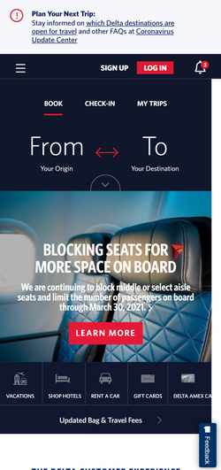
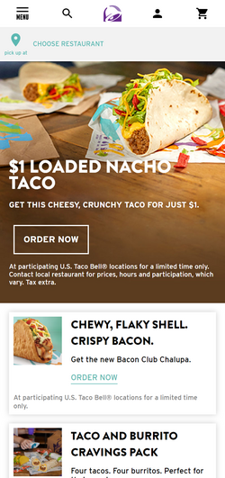
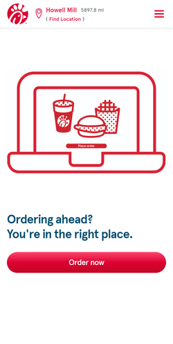

Visual Hierarchy
Delta Airlines
delta.com
The Delta Airlines website displays Visual Heirarchy nicely. One of the top items displayed is the From-To search. By using larger font and placing it near the top it successfully draws your attention to booking or checking on a flight. The average consumer can easily purchase tickets making them more successful. The lower level items include vacations, hotels, car rentals and gift cards.
Rule of Thirds
Taco Bell
tacobell.com
The Taco Bell website displays a couple design elements nicely, but I picked the rule of thirds. The picture on the top of their website goes approximately a third down the page which is pleasing to the eye and nicely follows the rule of thirds. If you actually continue going down the page (not shown on this screenshot) they repeat the menu items in boxes which are very similar in size and structure. Then if you scroll down further, the purple and pink grid makes their menu very attractive looking with their popular menu items showing icons and names in boxes all demonstrating repetition. This format makes it very user-friendly.
White Space and Clean Design
Chick-Fil-A
https://www.chick-fil-a.com
The Chick-Fil-A website uses a large amount of white space and clean design. With mainly red used to display sparce images and font, it is really easy to read and navigate. They have a blue line about ordering ahead. Their logo is very recognizable. If you click on a menu item, a photograph of the food displays. It is nice, simple and clean.